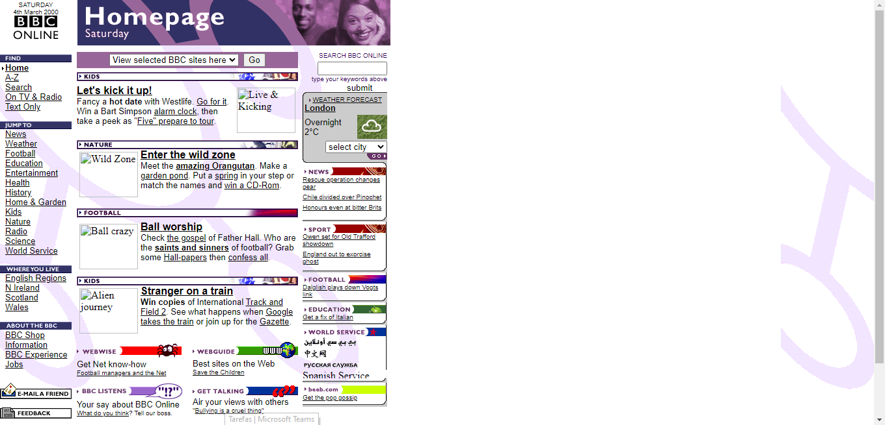
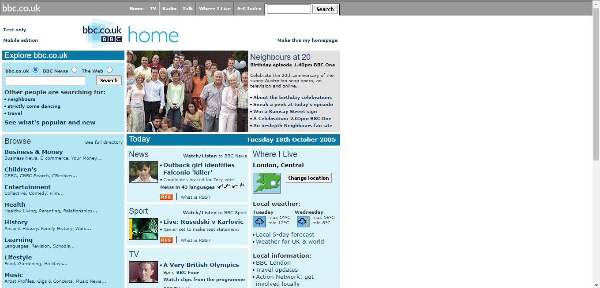
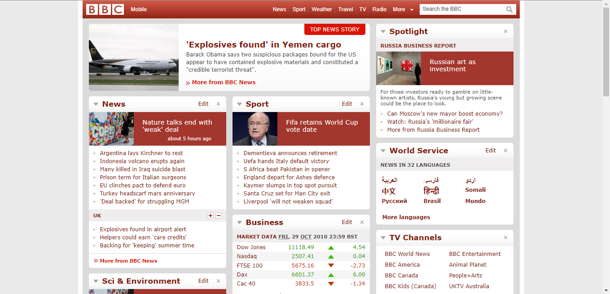
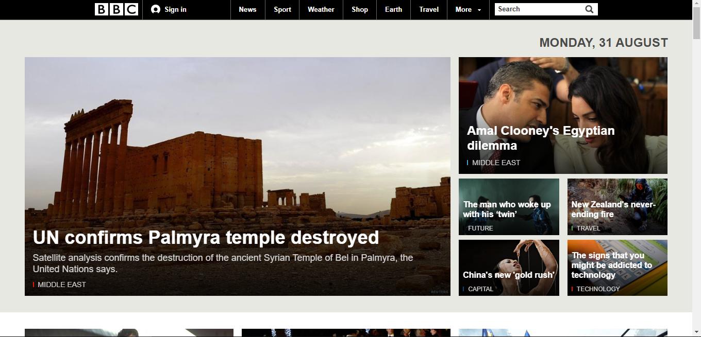
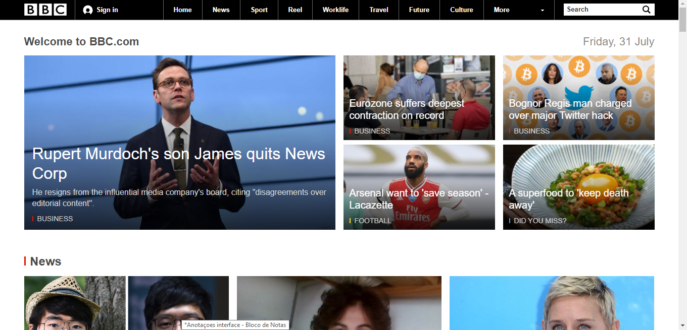

BBC 2000 ate os tempos atuais
Henrique Gonçalves Costa
Qual era o o propósito inicial do site?
O proposito inicial do site era dar noticias
O site propósito mudou ao longo do tempo?
O proposito principal nao, mas ele com o tempo começou a ser mais globalizado e nao so apenas no Reino Unico
Quais os problemas que esse site tinha quando "novo" e quais têm agora?
2000: O conteudo nao tinha um sistema hierarquico, conteudo todo espalhado e confuso em uma unica cor, conteudo nao centralizado, mantem um "sistema" como se fosse um jornal de papel.
2005: O site ja melhorou um pouco a questao de hierarquia, ainda continua com o problema das cores e o conteudo nao centralizado ainda mantem um "sistema" como se fosse um jornal de papel.Barra de pesquisa dificil de perceber e continuava focado apenas para conteudos nacionais
2010: O site continuou com o sistema de hierarquia melhor, em questao das cores melhorou mas ainda causa um pouco de confusao, e o conteudo ja esta centralizado, adicionaram parte para outras linguagens melhorando a acessibilidade em outros paises
2015: O site ja esta bem organizado, conteudo em seus devidos lugares e o sistema de hierarquia bem organizado
2022: O site esta muito bom, alguns fatores como otimizaçao do site ainda esta em falta, algumas coisa do js demoram pra carregar e possue uma tecnologia de css antiga a parte da navegaçao poderia ser melhorada como, a navbar seguir na tela para caso o usuario nao acha oque procura ele poder usar filtros ou procurar atraves do search
Que melhorias você faria nesse site para que ele pudesse ser mais interessante para um público jovem, de periferia, que não está acostumado ao uso de Internet por computadores e não tem interesses por notícias.
Uma linguagem mais adaptada, a linguagem das noticias hoje em dia sao muito "dificeis", entao a primeira mudança seria uma linguagem mais "coloquial", a outra seria Artigos mais resumidos e por fim noticias apresentadas de uma forma mais "divertida" por quadrinhos ou coisa do tipo